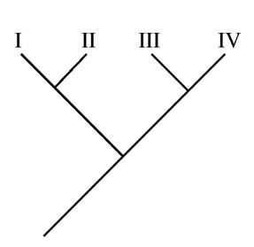

Based on morphological characteristics, the
phylogenetic tree above has been developed for
species I, II, III, and IV. DNA sequencing has
recently been completed for a particular gene
found in all four species. The sequencing will
provide additional information for answering
which of the following questions?
In the tree, we can infer that I and II are related, as well as III and IV. If we had the genetic sequence, we can compare which pair is more closely related by examining base differences.
The common ancestor of species II and III is located at the root of the phylogenetic tree.
Knowledge of vestigial structures should come from fossil or other morphological evidence.
When creating the tree, swapping branches connected to a node does not change anything about the relationships.